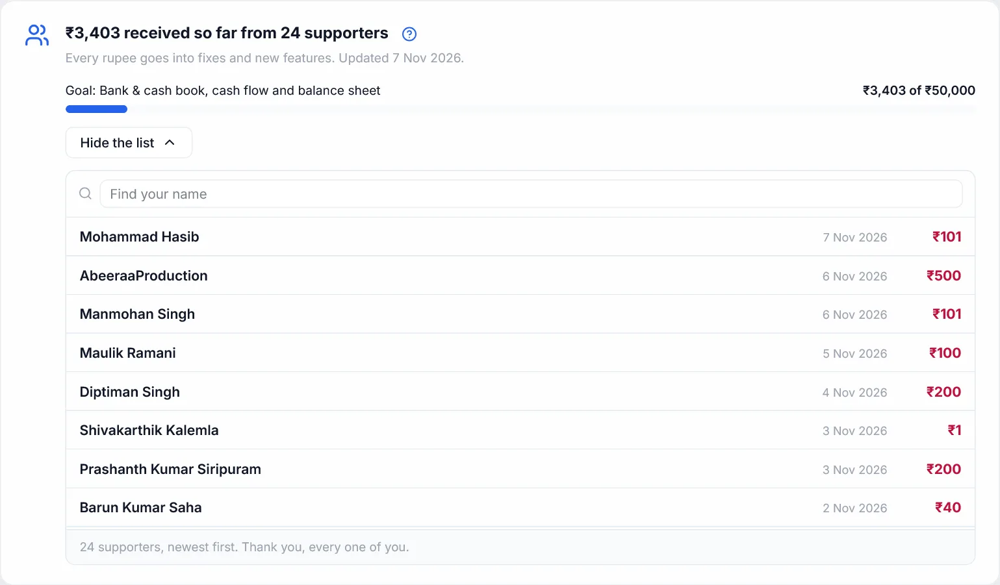

Support & About
Who makes Free GST Billing, how you can help it grow, and what DiceCodes builds for businesses.
#Free, and it stays free
Free GST Billing is built and maintained by DiceCodes in India. No ads, no account, no locked features, and your invoices never leave your computer. The full source code is on GitHub under the MIT licence.
After the ways to support, Safe and private lists what happens to your data: it stays on this computer, no account, works offline, no tracking, other computers cannot open it, open source, a safe install, daily backups, the PIN lock, problem reports, security fixes, and your part. Each point opens its part of Is it safe? Security and privacy.
If it saves you time every month, you can help keep the fixes and new features coming.
#Support with UPI
Scan with GPay, PhonePe, Paytm or any UPI app. Any amount helps.
UPI ID
princeramgarhiaa-1@okaxis
On your phone, tap an amount to open your UPI app: ₹200 ₹500 ₹1,000 Any amount
The payment note says "Free GST Billing support". Paying from the app's Support & About page adds your business name to it, so DiceCodes can thank you.
The Support with UPI card in the app
Giving money is completely optional. Nothing in the app is locked, and nothing is ever printed on your invoices, whatever you choose. The QR code is drawn inside the app, so the card works even without internet.
| On the card | What it does |
|---|---|
| ₹200 ₹500 ₹1000 Any amount | Picks the amount the QR code asks for. Any amount leaves it blank so you type it in your UPI app. |
| The QR code | Scan it with GPay, PhonePe, Paytm, BHIM or your bank's app. The payee is DiceCodes. |
| UPI ID and Copy UPI ID | To pay from a phone that cannot scan this screen: copy the ID and paste it in your UPI app as "Pay to UPI ID". It shows Copied for two seconds. |
| Payment note | The note your UPI app fills in: "Free GST Billing support", plus your business name from Settings. |
| Include my business name, so DiceCodes can thank you | Shown when your business name is saved. Untick it to pay without your name in the note. |
- Open Support & AboutNear the bottom of the sidebar.
- Choose an amountClick one of the amount buttons, or leave Any amount.
- Scan and payOpen your UPI app, scan the QR code, check the amount and the note, and enter your UPI PIN as usual.
The QR does not scan. Make the screen brighter and hold the phone 15 to 20 cm away, or use Copy UPI ID instead.
Copy does nothing. If the browser blocks copying, the UPI ID is shown in a small message at the bottom of the screen for a few seconds; type it in your UPI app.
#Received so far, and the supporters list
In the app, below the two support cards, a card shows how much users have given so far and from how many supporters, or Be the first to support Free GST Billing before anyone has. The figures come from a list the maintainer keeps on GitHub. The app reads it when the page opens and keeps the last figures it saw, so they still show when you are offline (the card is left out until it has been read once).
- Goal, when there is one: what the money is going towards, with a bar showing how far it has got.
- Thank you to our N supporters - see all opens the list of names, newest first, with the date and amount where known. Hide the list closes it.
- With six or more names, a Find your name box searches the list.

Paid but not on the list yet? The list is updated by hand, so a new payment can take a little while to appear. Paying with Include my business name ticked helps us match your payment.
#Supporters
#Help without paying
These matter just as much.
- Star it on GitHub: helps other businesses find it.
- Tell another business: send it to a friend on WhatsApp.
- Report a bug or ask for a feature: many features started as a request.
In the app each line is a link that opens in your browser. Star it on GitHub needs a free GitHub account: click the ☆ Star button at the top right of the page. Tell another business opens WhatsApp with a short message and the link already written; pick a contact and send. Report a bug or ask for a feature opens GitHub's forms (see Reporting a problem).
#A new update every Saturday
Every Saturday we release one update with that week's fixes and new features. The app tells you when it is ready: click Update in the sidebar, and your invoices and settings are kept. Anything urgent, such as the app not opening, is fixed straight away.
- Report a problem: say which version, which computer, and what you did. That lets us fix it the same week.
- Ask for a feature: we read every request each week, and the ones most people ask for come first. Add a 👍 to an open request to vote for it.
You get a reply on GitHub when it ships. What each update changed is in the app under Support & About → What's new, in the full changelog, and on GitHub Releases.
The card in the app has four buttons:
| Button | What it does |
|---|---|
| Report a problem | Opens GitHub's problem form. For a problem the app logged, Report in the Problem log is better: it fills in the details for you. |
| Ask for a feature | Opens GitHub's feature request form. |
| See all requests | Every open request. Search it first; if yours is already there, add a 👍 to it. |
| What's new or Changelog | Scrolls down to the What's new card. When the app cannot read its changelog, the button is called Changelog and opens the full list on GitHub instead. |
To install an update, see Updating the app.
#What's new
The What's new card in the app lists the last six updates, read from the changelog that comes with your copy of the app. The newest is open; click any version number to open or close it. Each shows its date and only the main titles of what changed, under headings such as Added and Fixed (at most eight under each; the rest are counted). Read the full notes opens that version's complete notes on GitHub.
After an update, the first time the app opens it shows a small window with the main news of the new version in three or four slides: what is new first, then what was fixed. Use Next and Back (or the arrow keys), or the dots to jump; Skip or Esc closes it. The last slide has Read the full notes, which opens the notes on GitHub, and Done. It is shown once per update, never on a new install (the welcome screens are shown there), and not while the app is locked. See what's new next to the What's new title shows the slides again.
The card shows what your copy contains. If it stops at an older version, you have not updated yet: see Updating the app. The full changelog link has every version since the first, and GitHub Releases has the downloads. If the card is missing, the changelog file could not be read; the Changelog button above opens it on GitHub.
#Work with DiceCodes
The team behind this app builds software for businesses too.
Email contact@dicecodes.com or visit dicecodes.com.
In the app, Email contact@dicecodes.com opens your email program with the subject "Project enquiry (from Free GST Billing)" filled in; say what you need and roughly when. dicecodes.com opens the website. This is paid work and separate from the free app: the app stays free whether or not you hire us. For a problem with the app itself, use Reporting a problem instead.
#In the app
The same page is in the app: Support & About, near the bottom of the sidebar. From top to bottom it has these cards, each with a small ? that opens its part of this page:
- Free, and it stays free
- Support with UPI and Help without paying, side by side
- Received so far, with the supporters list
- A new update every Saturday and What's new
- Problem log
- Work with DiceCodes
See Getting around for the thank-you card and the GitHub star note.